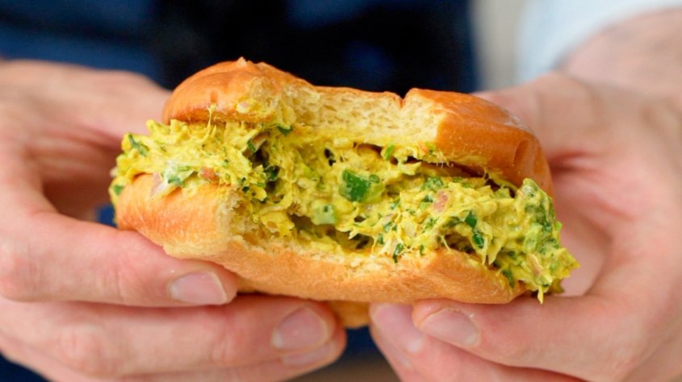

Curried Chicken Salad

Description
This unique chicken salad recipe is salty and sweet with a variety of textures. It
is best served on a toasted brioche roll or on crackers
Ingredients
- 16 oz. chicken breast
- 1/4 cup shallot, small dice
- 1/4 cup jalapeno, small dice
- 2 cloves garlic, minced
- juice of one lime
- 1 Tbsp curry powder
- 1 tsp cumin
- 1 tsp garam masala
- 1/4 cup minced cilantro
- 1/4 cup chopped pistachios
- 1/4 cup golden raisins
- 1 cup distilled white vinegar
- 1/2 cup sugar
- 1 1/2 tsp salt
- 3/4 cup mayo
Steps
- Cook chicken in Instant Pot. Roughly chop once cooled.
- Pickle raisins by heating vinegar and sugar to a simmer, adding raisins, and removing from heat. Allow to cool for 20 minutes.
- Combine all ingredients along with 2 spoonfuls of pickling brine
Back to main page